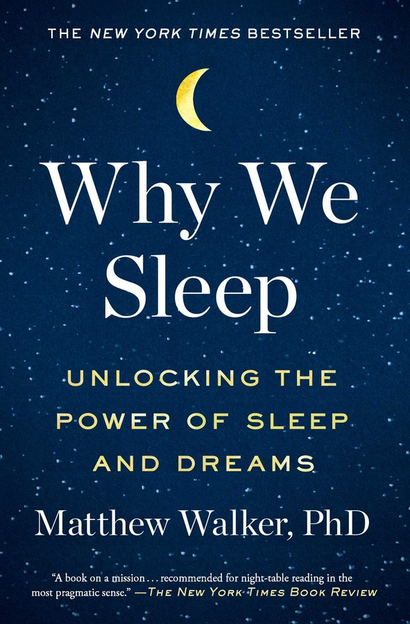

Michael Hempseed
Author
TEDx Speaker
Professional Speaker
Business Owner
Writer
Videos and Books
- Most of these books are also available as audible books on www.audible.com
- Matt Walker - Sleep is your superpower
- Russell Foster - Why do we sleep?
- Professor Russell Foster - Sleep your way to happiness
- Why We Sleep:
- Unlocking the Power of Sleep and Dreams 
- by Matthew Walker PhD
- The Nocturnal Brain:
- Nightmares, Neuroscience and
- the Secret World of Sleep
- by Guy Leschziner
- Chasing the Sun:
- The New Science of Sunlight and
- How it Shapes Our Bodies and Minds
- by Linda Geddes
- Podcast Episode 031: The New Science of Sunlight – Linda Geddes
- https://sleepjunkies.com/science-of-sunlight/
Books and Further Reading